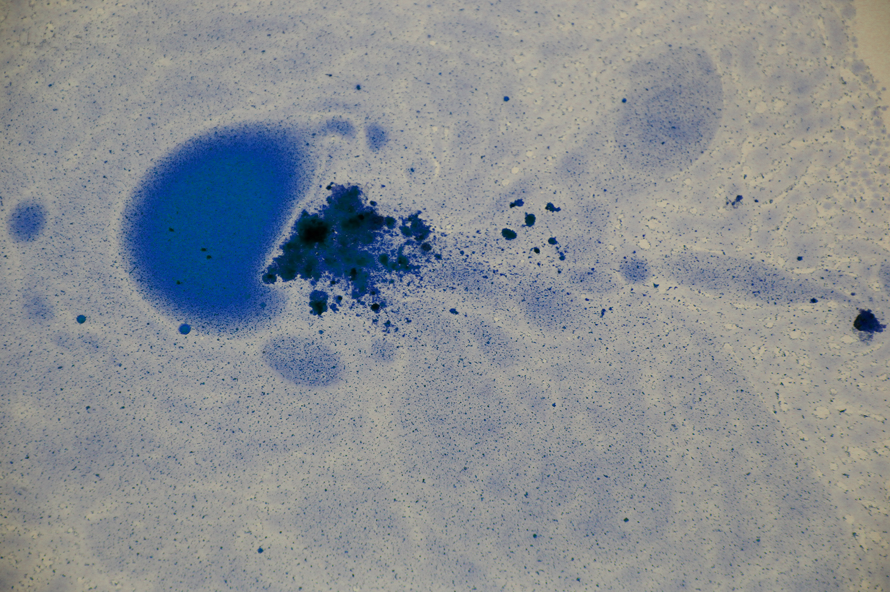

Alex Tkalenko
Contact
Pieza sonora seleccionada para la edicion 12 del festival In Sonora de Madrid.
Sound piece selected for the 12th edition of the In Sonora festival in Madrid.
In-Sonora 12 site
Inicio/Home

<a href="https://atkmusic.bandcamp.com/album/sound-file-conversations">Sound File Conversations by Alex Tkalenko</a>